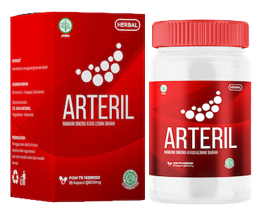

Dari kolesterol tinggi hingga stroke
adalah satu langkah!
adalah satu langkah!
20:15, 1/25/2023
Seorang Dokter Spesialis Jantung dan Pembuluh Darah Menjelaskan tentang
Rahasia Umur Panjang dan Kesehatannya yang Sangat Baik

Dr. Intan - Spesialis Jantung dan Pembuluh darah berumur 89 tahun diwawancara untuk
membagikan tips bagaimana menjaga pembuluh darah tetap bersih dari plak-plak
penghambat aliran darah agar terhindar dari penyakit jantung.
Halo dokter, kenapa rahasia umur panjang terletak pada fokus pada kesehatan
kardiovaskular, indeks tekanan darah dan yang paling penting pemurnian darah?.
Karena jantung dan pembuluh darah itu yang mengalirkan oksigen dan nutrisi ke
seluruh tubuh. Pemeriksaan yang paling dasar untuk mengetahui adanya gangguan pada
kardiovaskular (jantung dan pembuluh darah) adalah pemeriksaan tanda-tanda vital salah
satunya pemeriksaan tekanan darah. Ketika tekanan darah yang terlalu tinggi memberikan
kitaa sinyal adanya gangguan pada jantung yang signifikan, karena tekanan darah yang
terlalu tinggi menyebabkan kerja jantung semakin berat dan jika ini tidak diterapi lanjut
maka dapat menyebabkan gagal jantung sampai henti jantung. Permunian darah maksudnya
di sini adalah ketika pembuluh darah itu bersih dari plak dan lemak.
Lemak atau dalam dunia kedokteran disebut dengan lipid merupakan biomolekul yang
sangat penting untuk menyusun bagian tubuh manusia terutama membran sel, pelarut vitamin
A, D, E, K, pelindung tubuh dari suhu rendah dan melindungi organ-organ tubuh. Namun,
lemak yang terlalu banyak di dalam tubuh dapat menyebabkan berbagai penyakit seperti
hipertensi, stroke dan penyakit jantung. Mengapa demikian? karena lemak di dalam darah
yang tinggi dapat menumpuk pada lapisan endotel dinding pembuluh darah yang
menyebabkan tekanan darah meningkat karena kompensasi dari penumpukan lemak sehingga
pasien menderita penyakit hipertensi, apalagi didukung dengan pasien usia tua yang mana
dinding endotel pembuluh darahnya yang sudah tidak elastis lagi sehingga sangat mudah
terjadi penumpukan lemak/plak yang menyebabkan aterosklerosis.
Jika pembuluh darah bersih dan sehat, berapa lama seseorang dapat hidup?
Seseorang dapat hidup dengan pembuluh darah yang baik dan jantung yang sehat
sekitar 40 tahun kedepan, diikuti dengan pola makan yang sehat dan mengonsumsi produk
Arteril yang dapat membantu membersihkan plak pada pembuluh darah yang mana suplemen
ini dapat mengatasi lemak darah yang tinggi di dalam tubuh dan sangat aman karena dibuat
oleh bahan-bahan herbal terpilih yang terdiri dari :
- Syzygium polyanthum (daun salam)
- Guazuma ulmifolia (jati belanda)
- Curcuma xanthorriza (temulawak)
- Sonchus arvensis (daun tempuyung)
Anda menyatakan bahwa menjaga pembuluh darah bebas dari bakteri dan kotoran
adalah dasar untuk menciptakan jantung yang sehat dan berumur panjang. Mengapa
menurut Anda begitu?
Pastinya, karena pembuluh darah yang bebas plak dan tidak terdapat infeksi tidak
akan menghambat aliran oksigen dan nutrisi keseluruh tubuh terutama ke otot-otot jantung.
Otot-otot jantung fungsinya untuk memompa jantung. Ketika otot-otot jantung ini
kekurangan oksigen dan nutrisi akibat penempelan plak ataupun infeksi bakteri maka dapat
menyebabkan gagalnya fungsinya jantung.

Sebenarnya lemak darah dapat menumpuk dimana pun namun paling sering
menyebabkan penyakit paling serius jika menyumbat pada otak dan jantung. Namun, untuk
lebih pastinya dapat melakukan pemeriksaan laboratorium yaitu kolestrol total, trigliserida
dan LDL. Pada pasien dengan lemak darah yang tinggi di dalam tubuh besar kemungkinan
akan munjukkan hasil laboratorium dari kolestrol total, trigliserida maupun LDL yang tinggi.
Trigliserida yang sangat tinggi yaitu >400 mg/dl dapat membuat kerusakan pada hepar.
Sehingga sangat penting untuk mengurangi lemak darah yang tinggi di dalam tubuh, salah
satu caranya adalah dengan mengonsumsi “ARTERIL”.
Apa itu sirkulasi darah?
Sirkulasi darah yang terdiri atas jantung, komponen darah dan pembuluh darah yang
berfungsi mengalirkan suplai oksigen dan nutrisi tubuh keseluruh jaringan tubuh yang
diperlukan untuk metabolisme tubuh.
Apa yg terjadi dengan pembuluh darah seiring bertambahnya usia, kenapa terjadi itu?
Pembuluh darah yang terjadi pada usia tua adalah pengerasan/aterosklerosis.
Aterosklerosis ini terjadi karena semakin tua kandungan kolagen didalam tubuh akan
semakin berkurang. Penyusun pembuluh darah salah satunya adalah kolagen, yang mana
kolagen ini membuat pembuluh darah menjadi lentur, ketika tua kolagen yang berkurang ini
akan menyebabkan pengerasan pada pembuluh darah, sehingga plak sangat mudah menempel
yang akan menyebabkan hambatan pada aliran darah yang membawa oksigen dan nutrisi ke
jaringan dan sel menjadi terhambat. Hal ini terjadi karena proses penuaan, proses penuaan
pada pembuluh darah sendiri itu tidak dapat dipungkiri namun dapat diperlambat dengan
mengonsumsi produk kami “Arteril”.
Apa itu obstruksi pada pembuluh darah jantung? Mengapa dapat terjadi hal tersebut?
Obstruksi pada pembuluh darah jantung adalah hambatan atau penyempitan yang
terjadi pada pembuluh darah akibat plak pada pembuluh darah itu sendiri dan didukung oleh
adanya proses pengerasan/aterosklerosis pada pembuluh darah akibat usia.
Ini adalah gambar pembuluh darah yang tersumbat. Apa yg terjadi Jika Anda belum
pernah membersihkan pembuluh darah sebelumnya dan Anda berusia lebih dari 40
tahun?

Ini adalah gambar pembuluh darah yang tersumbat
Yang akan terjadi adalah seperti gambar diatas. Plak tersebut akan semakin menebal hingga menutupi pembuluh darah yang akan mengalirkan oksigen dan nutrisi ke dalam sel.
Dokter, apa penyebab sumbatan pembuluh darah?
Penyebabnya adalah proses penuaan (aterosklerosis) karena lapisan kolagen pembuluh darah semakin berkurang, lemak dan gula. Ketiga hal ini yang paling sering menyebabkan sumbatan pada pembuluh darah. Akibat penuaan memang tidak dapat dihindari namun plak yang disebabkan oleh lemak dan gula darah yang tinggi masih dapat kita intervensi.
Pembuluh darah yang terkontaminasi juga menyebabkan penyakit apa saja?
Paling sering adalah penyakit jantung koroner dan stroke.
Jadi, apakah ada gejala yang perlu diketahui jika pembuluh tersumbat, dokter?
Semua tergantung daripada dimana lemak tersebut menyumbat pembuluh darah, ketika lemak tersebut menyumbat pada pembuluh darah di jantung maka akan menyebabkan gejala serangan jantung seperti nyeri dada sebelah kiri seperti ditusuk-tusuk dan menjalar ke lengan kiri. Gejala ini paling sering dialami oleh penderita serangan jantung. Ketika lemak tersebut menghambat pembuluh darah di otak, maka suplai darah dan nutrisi ke otak terhambat maka akan membuat manifestasi klinis stroke yaitu adalah lemah separuh badan, bicara pelo, wajah menjadi tidak simetris, ketika makan atau minum otot-otot lidah dan mulut menjadi tidak kuat yang akan membuat pasien tidak dapat melakukan aktifitasnya sendiri sehingga hanya berbaring di tempat tidur bahkan untuk defekasi maupun berkemih tidak dapat dilakukan sendiri harus dengan bantuan orang lain hanya untuk ke kamar mandi.
Bisakah Anda memberi tahu kami mengapa kami harus mengonsumi “ARTERIL” untuk membersihkan pembuluh darah
Pria berusia 65 tahun menderita penyakit hipertensi sejak usia 35 tahun namun masih sehat dan telihat bugar. Beliau mengatakan saat ini masih berolahraga rutin seperti bersepeda, berenang dan lari maraton untuk mengisi kesibukannya. Pria tersebut mengatakan bahwa setiap hari rutin mengonsumsi “Arteril” yang membuat stamina dan tekanan darah selalu dalam batas normal. Sebelumnya sering merasakan nyeri pada tengkuk, berdebar-debar, pusing, pandangan ganda semenjak mengonsumsi Arteril selama 1 minggu pria tersebut tidak pernah merasakan gejala lagi dan ketika kontrol rutin tekanan darah ke dokter 1 bulan sekali tekanan darah selalu dalam batas normal. Tekanan darah pria tersebut sebelum mengonsumi Arteril selalu diatas 160/90 mmHg padahal sudah rutin berolahraga, menghindari makanan berlemak dan diet sehat. Hanya dalam 1 minggu mengonsumsi Arteril tekanan darahnya sekarang selalu dibawah 140/90 mmHg, perubahan yang sangat signifikan ini terjadi sehingga membuat pria ini merekomendasikan suplemen Arteril kepada sesama teman-temannya yang menderita hipertensi juga.
Seorang ibu rumah tangga berusia 58 tahun sering mengeluhkan kebas pada jari-jari kedua tangannya dan tegang pada leher, setelah dilakukan pemeriksaan laboratorium didapatkan kolestrolnya tinggi yaitu sekitar 320 mg/dl dan diberikan terapi obat atorvastatin selama sebulan. Namun, pasien sering merasakan nyeri otot akibat efek samping dari atorvastatin sehingga berhenti mengonsumsi obat tersebut dan direkomendasikan oleh temennya mengonsumsi Arteril selama kurun waktu 1 bulan rutin mengonsumsi Arteril, ibu tersebut melakukan pemeriksan laboratorium kolestrol total, trigliserida dan ldl didapatkan semua hasilnya dalam batas normal. Kolestrol total yang awalnya 320 mg/dl menjadi 190 mg/dl yang mana nilai normalnya adalah <200 mg/dl. Gejala kesemutan pada kedua tangan ataupun sering merasa pegal dan lemas semuanya hilang karena ibu tersebut rutin mengonsumsi Arteril dan beliau sekarang hanya menjaga pola makan, gaya hidup dan setiap hari rutin mengonsumsi Arteril.

Syzygium polyanthum mengandung tannin, saponin dan niacin yang berfungsi untuk menurunkan kadar lemak dalam darah yaitu kolestrol total dan LDL (lemak jahat) dengan mengikat garam empedu endogen.
Guazuma ulmifolia mengandung musilago yang terdapat pada daun jati belanda dapat mengendapkan mukosa protein yang terdapat pada permukaan intestine (usus halus) sehingga mengurangi penyerapan makanan. Musilago akan berikatan dengan empedu sehingga mencegah penyerapan empedu melalui siklus enterohepatik. Kadar kolesterol hati akan berkurang dengan terhambatnya siklus enterohepatik. Kadar kolesterol dalam hati berkurang maka akan mengaktifkan reseptor LDL sehingga banyak LDL yang akan ke hati dan terjadi peningkatan clearance LDL. Hal ini akan menyebabkan penurunan LDL dalam darah.
Curcuma xanthorriza. Kurkumin dalam temulawak dapat menurunkan kolestrol karena fungsinya sebagai kolagoga (perangsang empedu). Meningkatkan produksi dan sekresi empedu yang merupakan aktivitas kolagoga rimpang temulawak, maka dengan aktivitas kolagoga tersebut akan menurunkan kadar kolesterol yang tinggi pada tubuh. Serta kurkumin juga mampu menghambat oksidasi LDL dan akumulasi kolesterol.
Sonchus arvensis sama seperti Syzygium polyanthum yang mengandung tannin dan saponin uang dapat mengikat garam empedu endogen untuk menurunkan kadar lemak darah.
Komentar